로데오거리는 쇼핑과 식사로 사람이 몰리는 저녁에 가장 붐비는 길이다. 실험은 이 시간대에 담배를 피우는 사람과 쉬려는 사람이 같은 벤치를 나눠 쓰는 장면에서 출발하였다.
구월동 로데오거리는 인천 남동구 구월동의 상업 가로다. 음식점과 상가가 늘어선 보행로가 로데오광장으로 이어지고, 거리와 광장에는 곡선형 목재 벤치와 각형 좌석, 재떨이를 단 흡연시설이 놓여 있다. 걷는 사람과 앉아 쉬는 사람, 담배를 피우는 사람이 한 보도 안에서 만나는 구조다.
7월 29일, 8월 27일, 9월 29일 세 차례 현장조사에서 낮과 밤, 평일과 주말의 거리를 기록하였다. 흡연은 정해진 한 곳에 모이지 않고 보행로와 벤치 주변으로 흩어졌고, 흡연자와 비흡연자의 동선이 섞였다. 목재 벤치는 쉬는 자리이면서 동시에 담배를 피우는 자리로 쓰였고, 그 옆 보행로에는 꽁초가 남았다.
9월 14일(월) 저녁에는 실험과 같은 시간대에 사전조사를 하여 시민 표본 200을 채웠다. 저녁은 거리의 밀집도가 가장 높은 시간이었다. 이 사전조사의 계수가 1·2차를 비교하는 기준값이 되었다.
실험의 계기는 구월동 흡연 문제를 둘러싼 시민 민원이었다. 핵심 문제 지표는 거리 흡연과 꽁초 투기 두 가지로 잡았고, 두 지표 모두 사전조사·1차·2차에 같은 저녁 시간대, 같은 관찰 지점에서 셌다.
문제는 ‘무분별한 흡연과 간접흡연’으로 정의하였다. 금지 표지를 하나 더 세우는 대신, 흡연과 휴식의 자리를 나누어 각자가 있을 곳을 분명히 하는 쪽을 택하였다. 목표는 흡연자와 비흡연자가 서로 배려하며 공존하는 거리 문화였다. 1차는 공간을 나누고, 2차는 그 공간까지 가는 길을 안내하는 순서로 세웠다.
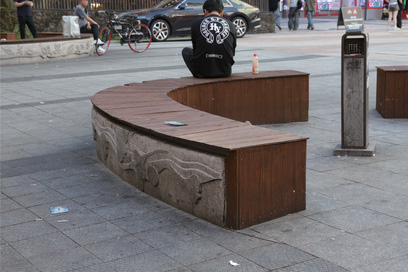
사전 현장조사
곡선 벤치가 휴식과 흡연에 함께 쓰였다. 로데오거리 목재 좌석 이용 기록
사전 현장조사
재떨이 기둥이 보행로 가운데 섰다. 각형 좌석·흡연시설 기록
현장을 본 날현장조사 7.29 · 8.27 · 9.29 (낮·밤·평일·주말) 사전조사 9.14(월) 저녁 · 표본 200
PEOPLE사람
200표본
사전조사 시민 표본 · 9.14(월) 저녁
흡연자·비흡연자 로데오거리 이용자 모두가 대상
시민디자인단 7명 1차 설치 참여
PLACE공간
2구역
A 로데오광장 · B 로데오거리
상업 가로 음식점·상가가 밀집한 보행로
곡선 목재 벤치·각형 좌석·재떨이 기둥
PROBLEM문제
1,387건
2024.1–7 구월동 음식점 흡연 단속
분산 보행로·벤치 주변으로 흩어진 흡연
혼재 휴식 공간의 간접흡연과 꽁초
사전 현장조사에서 기록한 거리
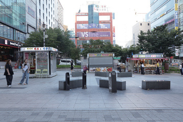
보행로의 흡연시설
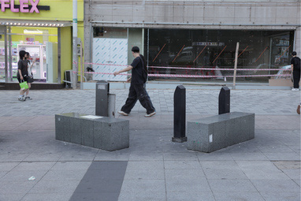
보행로 가운데 기둥
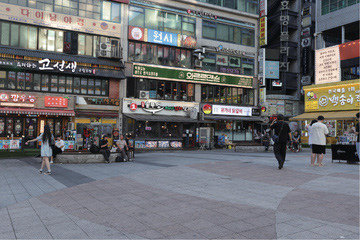
상가가 늘어선 가로
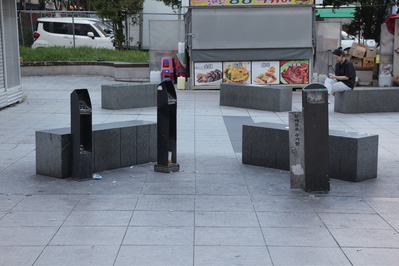
재떨이 기둥
흡연시설이 보행로 한가운데 놓여, 지나는 사람과 담배를 피우는 사람이 같은 동선 위에 섰다. 사전 현장조사 사진
자료: 인천광역시(2026), 인천 창의디자인 사회실험 사업 심의자료
170
들어가기Ⅰ 묻다Ⅱ 찾다Ⅲ 설계하다Ⅳ 실험하다Ⅴ 검증하다Ⅵ 남기다
06로데오
Ⅳ-06구월동 로데오거리·광장왜 여기인가
네 개의 지역 통계와 두 편의 연구는 ‘구역 분리와 안내’라는 하나의 실험 질문으로 모였다
심의 과정에서 정리한 핵심 문제 지표는 거리 흡연과 꽁초 투기였다. 단속 건수와 흡연율은 문제의 크기를, 두 연구는 문제를 다룰 방법을 가리켰다.
지역 통계 ①
488건
인천시 금연 대상 시설 58,236개소를 점검한 결과, 금연구역 안 흡연 488건이 적발되었다.
인천광역시 건강증진과, 2023년 보도자료
지역 통계 ②
1,387건
2024년 1~7월 구월동 음식점 흡연 단속은 1,387건, 월평균 약 198건이었다.
경기일보 기사 발췌
지역 통계 ③
17.3%
2025년 인천 성인의 일반담배 흡연율은 17.3%였다.
질병관리청, 2025년 지역사회건강조사
지역 통계 ④
6.7%
같은 해 전자담배 사용률은 궐련형 6.7%, 액상형 4.8%였다.
질병관리청, 2025년 지역사회건강조사
로데오거리 실험 질문구역 분리와 유도사인은 흡연존 이용과 휴게공간 사용을 바꾸는가?
네 개의 통계는 같은 장면을 가리켰다. 금연구역 안 흡연과 음식점 흡연 단속은 단속만으로 줄지 않았고, 흡연 인구는 일반담배와 전자담배로 나뉘어 있었다. 그래서 흡연이 일어날 자리를 정해 주는 실험이 필요하였다.
두 연구는 방법을 나누어 주었다. 구역을 분명히 나누면 위반이 줄고, 메시지를 더하면 특정 장소의 흡연이 줄었다. 실험은 이 두 가지를 차례로 거리에 놓았다. 1차는 구역을 나누고, 2차는 같은 구역에 메시지를 더하였다.
실험 질문도 이 두 방법의 순서로 짰다. 구역을 나눈 1차에서 흡연이 흡연존으로 모이는지를 먼저 보고, 같은 구역을 그대로 둔 2차에서 유도사인이 그 이동을 더 늘리는지를 보았다. 휴게공간 사용은 두 차수 모두 같은 B 거리 벤치에서 사전조사와 같은 방식으로 셌다.
연구가 가리킨 방법 → 실험에 옮긴 장치
Gibson · Werner(1994)구역을 분명히 나누면공항 대기공간에서 흡연·금연 구역을 명확히 구분했을 때, 구분이 모호한 공간보다 금연구역 안 흡연 위반이 적었다.
▶
1차 「피어봄」흡연존과 휴게존의 분리A 광장에 연초 흡연존과 전자담배존을 세우고, B 거리의 기존 흡연 자리를 향기 나는 휴게존으로 바꾸었다.
Nijssen 외(2023)메시지를 더하면일부 설득 메시지가 건물 출입구 앞 흡연을 줄이는 효과를 보였다.
▶
2차 「이어봄」시간과 배려를 적은 안내흡연존까지 남은 60·30·15초와 배려 문구를 바닥과 전신주에 붙였다.
문제에서 목표까지
문제 정의무분별한 흡연과 간접흡연
▶
1차 해법흡연·비흡연 공간 분리
▶
2차 해법흡연존 유도 사이니지
▶
목표서로 배려하는 공존의 거리 문화
흡연을 막는 대신 흡연할 자리를 정해 주고, 그 자리로 가는 길을 알려 주는 것이 로데오거리 실험의 뼈대였다. 기대효과는 공간 분리와 안내 디자인의 흡연행태 개선 효과 검증으로 정리하였다.
자료: 인천광역시(2026), 인천 창의디자인 사회실험 사업 심의자료
171
들어가기Ⅰ 묻다Ⅱ 찾다Ⅲ 설계하다Ⅳ 실험하다Ⅴ 검증하다Ⅵ 남기다
06로데오
Ⅳ-06구월동 로데오거리·광장기획의 변천
‘꽁초를 재미있게 버리게 하는’ 구상은 검토를 거치며 흡연과 휴식의 자리를 나누는 실험으로 바뀌었다
09.16사전기획
재미를 더한 꽁초 처리
개별 흡연공간 + 다트형 게이미피케이션
검토위원회 사전검토
연기가 흘러들지 않는 위치
흡연공간 위치 조정, 안내표지에 이동 방향·거리 표시
10.01세부 조율
공간을 나누고 안내를 추가
1차 흡연존·휴게환경 / 2차 유도·인지 사인
검토2차 부서검토
안전펜스형(alt 1)으로 결정
실험 방법·시뮬레이션 전면 수정, 배너 디자인 4종 규격
10.19–21실행계획
A 광장 흡연존 · B 거리 휴게존
공간 구분의 이용 변화 → 안내 추가의 인지·유도 변화
11.15–21실행
1차 3일 · 2차 4일
총 7일 운영 · 수집 11.15·16 / 11.20·21 저녁
9월 16일 사전기획의 출발점은 꽁초였다. 거리에 개별 흡연공간을 두고, 꽁초를 버리는 행동에 다트 같은 게임 요소를 더해 재미로 올바른 처리를 끌어내는 구상이었다. 이 단계의 질문은 ‘꽁초를 어디에, 어떻게 버리게 할 것인가’에 머물렀다.
공공디자인위원회 사전검토는 질문의 범위를 넓혔다. 보행로와 휴게공간으로 연기가 흘러들지 않도록 흡연공간의 위치를 조정하고, 안내표지에 이동 방향과 거리를 표시하라는 의견이었다. 연기가 머무는 자리와 사람이 쉬는 자리를 함께 다루라는 뜻이었고, 이 의견은 1차의 구역 분리와 2차의 거리 안내로 나뉘어 반영되었다.
10월 1일 세부 조율에서 기획은 ‘공간을 나누고 안내를 추가’하는 두 단계로 정리되었다. 1차는 흡연존과 휴게환경을 만들고, 2차는 같은 공간에 유도·인지 사인을 더한다. 2차 부서검토에서 실험 방법이 안전펜스형(alt 1)으로 정해지자 실험 방법과 시뮬레이션을 다시 그렸고, 흡연존의 벽이 될 배너 디자인 4종의 평면도와 규격을 더하였다.
10월 19일부터 21일까지 실행계획을 구체화하면서 장소가 둘로 나뉘었다. A 로데오광장에는 연초 흡연존과 전자담배존을, B 로데오거리에는 기존 흡연 자리를 쉼터로 바꾼 바이오필릭 휴게존을 두었다. 제1회 심의의견에 따라 상점이 밀집한 면은 부스 벽을 높여 연기를 막고, 벤치 위에 제연기를 함께 달았다.
실행은 11월 15일(일)부터 21일(토)까지 7일이었다. 1차를 걷지 않은 채 18일(수)부터 2차를 이어 붙였다. 2차의 바닥 시트는 3M과 협업해 제작·설치하였고, 2차 자료 수집일은 그 일정에 맞춰 20일(금)과 21일(토)로 잡았다.
무엇이 바뀌었나 · 착수안과 실행안
흡연을 다루는 방식
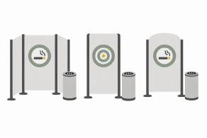
꽁초 처리 게임개별 흡연공간과 다트형 재미 요소
▼
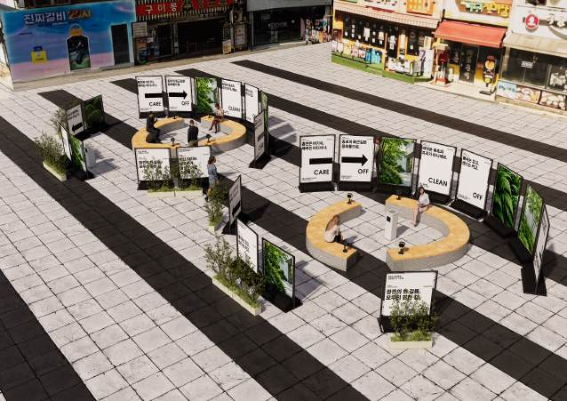
구역 분리연초·전자담배 두 부스를 광장에 모음
기존 흡연 자리
흡연과 휴식이 섞인 벤치목재 좌석 주변 분산 흡연
▼
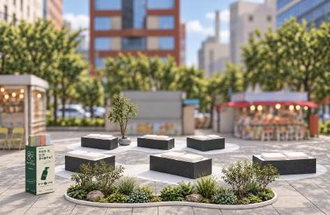
향기 나는 휴게존식재·백색 시트·이소의 향
길 위의 안내
재떨이가 곧 안내흡연할 곳을 알리는 표지 없음
▼
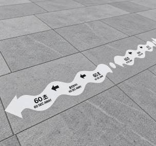
흡연존까지 60·30·15초바닥·전신주의 시간 안내
사전기획 · 09.16꽁초를 재미있게 버리게 한다 처리 행동 하나가 질문
▶
실행한 실험 · 11.15–21흡연과 휴식의 자리를 나누고, 그 사이를 안내로 잇는다 공간의 분리와 이동의 안내가 질문
자료: 인천광역시(2026), 인천 창의디자인 사회실험 사업 심의자료
172
들어가기Ⅰ 묻다Ⅱ 찾다Ⅲ 설계하다Ⅳ 실험하다Ⅴ 검증하다Ⅵ 남기다
06로데오
Ⅳ-06구월동 로데오거리·광장기획의 변천
검토 의견과 협력 주체의 조건이 하나씩 흡연존의 벽 높이와 휴게존의 재료가 되었다
로데오거리의 설치물은 위원회 사전검토, 제1회 심의, 부서검토 의견과 상인·협력기업의 조건을 거쳐 사양이 정해졌다. 시민디자인단 7명은 1차 설치에 참여하였다.
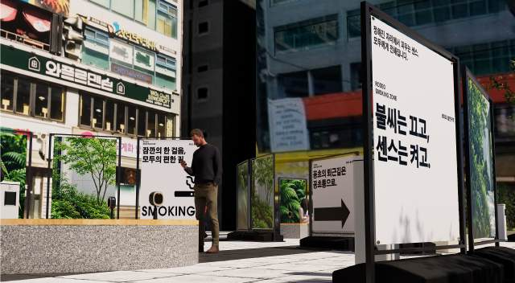
흡연존 시뮬레이션(VIEW A-1)
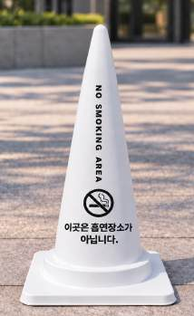
비흡연존 사인(콘)
휴게존 시뮬레이션
흡연존은 배너대를 벽으로, 휴게존은 식재와 향을 재료로 삼았다. 1차 「피어봄」 시뮬레이션과 비흡연존 표시 콘
7명시민디자인단 1차 설치 참여
30명차수별 현장 인터뷰 최소 참여인원
200사전조사 시민 표본
7일1·2차 총 운영
검토·협의에서 나온 조건
설치물에 반영한 것
현장에서 확인한 것
사전검토위원회보행로·휴게공간으로 연기가 흘러들지 않게 위치 조정, 이동 방향·거리 표시
▶
흡연존은 광장으로, 안내는 시간으로A 광장 흡연존 · 2차 60·30·15초 사인
▶
휴게존으로 넘어오는 연기·냄새, 사인 인지
제1회 심의위원회연기 유입 방지 의견 재확인, 조치로 상점 밀집 면의 부스 벽을 높임
▶
높은 배너대 1,845mm + 제연기 8대상가 쪽은 높게, 광장 쪽은 1,320mm로 낮게
▶
상가 출입구 앞 연기와 혼잡
1차 부서검토안전성상업밀집지역 시민 안전, 주취자 충돌 방지, 꽁초함 등 기존 시설 활용
▶
돌출부 보호·고정 · 존별 안전인력연초·전자담배존 각 최소 1인 상시 대기
▶
충돌·전도와 통행 방해 여부
협력 주체3M · 이소 · 상인사인 소재와 향의 설치 일정·장소, 상인 협조와 의견 수렴
▶
백색 미끄럼방지 시트 · 이소의 향향기볼·패브릭 스프레이, 걸이형 향 33개
▶
휴게존 이용과 상인 반응
로데오거리는 다른 거점과 달리 이용자 워크숍을 따로 열지 않았다. 대신 상업 가로라는 조건 때문에 연기·안전·영업을 둘러싼 검토가 많았고, 그 의견들이 설치물의 높이와 위치, 재료를 정하였다. 남동구 공원녹지과·청소행정과와는 공문·설문·장소를, 상인협회와는 실험 안내와 현장 운영을 협의하였다. 검토 의견 가운데 위치와 높이에 관한 것은 1차 설치물에, 이동 방향과 거리에 관한 것은 2차 사인에 반영되었다.
휴게존의 재료는 협력기업에서 왔다. 사회적협동조합 이소는 인천의 향을 시민이 체험하는 향기 나눔형 공공서비스를 휴게존에 더하였고, 3M과는 바닥과 벤치에 붙일 백색 미끄럼방지 시트를 협의하였다. 시민디자인단 7명은 1차 설치에 함께하며 시설이 거리에 놓이는 과정을 기록하였다. 향과 시트는 1차가 끝난 뒤에도 2차 기간 내내 같은 자리에 두었다.
자료: 인천광역시(2026), 인천 창의디자인 사회실험 사업 심의자료
173
들어가기Ⅰ 묻다Ⅱ 찾다Ⅲ 설계하다Ⅳ 실험하다Ⅴ 검증하다Ⅵ 남기다
06로데오
Ⅳ-06구월동 로데오거리·광장실험 설계
2차는 1차의 두 구역을 그대로 두고, 그 사이의 길에 시간 안내만 더하였다
더한 요소
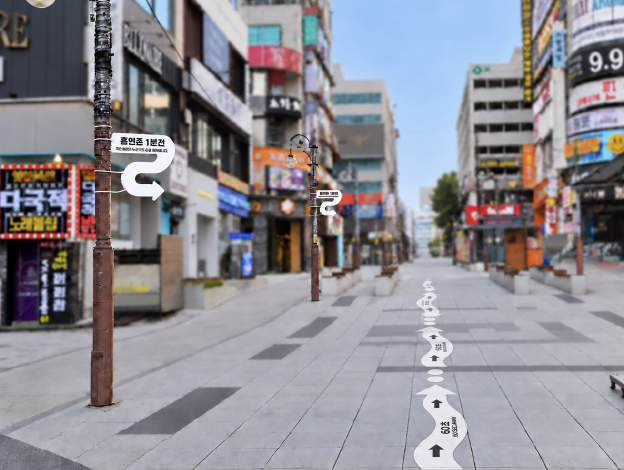
1차 「피어봄」흡연은 한곳으로, 휴식은 자연과 함께
2차 「이어봄」안내를 따라 흡연존으로, 꽁초는 수거함으로
연초 흡연존 + 전자담배존
A 광장
같은 흡연존 유지
바이오필릭 휴게존식재 · 백색 시트 · 이소의 향
B 거리
같은 휴게존 유지
없음
바닥 안내
흡연존까지 60·30·15초2,000×300 시트 26매 · Ø100 점 48개
없음
눈높이 안내
전신주 지주형 사인 4개400×400 · 하단 2,000mm
흡연존·휴게존 이용 · 구역 인지 · 이용 의견
관찰 항목
+ 사인 인지 · 흡연존 유도 · 꽁초 처리 행동
11.15(일) · 16(월) 저녁
수집일
11.20(금) · 21(토) 저녁
유지한 조건 사전조사 · 1차 · 2차 모두 같게
같은 두 구역A 광장 흡연존 B 거리 휴게존
저녁 시간대거리 밀집도가 가장 높은 시간
평일 + 주말차수마다 평일 저녁 1일 · 주말 저녁 1일
같은 5점 문항인지 · 편의 · 만족 이용수칙 준수 의향
같은 계수 지점사전조사와 같은 관찰 지점·방법
로데오거리는 1차 위에 2차를 더하는 누적형으로 설계하였다. 1차가 끝난 뒤에도 흡연존과 휴게존을 걷지 않았고, 2차에는 두 구역을 잇는 길에 시간 안내만 더하였다. 그래서 사전조사와 1차의 차이는 공간을 나눈 효과로, 1차와 2차의 차이는 안내를 더한 효과로 읽었다.
이 구조에는 대가가 있었다. 2차의 흡연존 이용에는 1차 공간 분리의 효과가 이미 들어 있고, 흡연존이 며칠째 같은 자리에 있었다는 익숙함도 섞인다. 1차와 2차를 연달아 운영해 둘 사이에 1주 간격을 두지 못했으므로, 2차의 증분은 안내의 효과와 노출 기간의 효과를 함께 담은 값으로 다루었다.
대신 비교를 흔드는 조건은 묶어 두었다. 사전·1차·2차 모두 밀집도가 가장 높은 저녁 시간에, 같은 지점에서 같은 방식으로 흡연·휴게 장면을 세었다. 인지·이용 편의·만족·이용수칙 준수 의향은 같은 5점 스티커 문항으로 물었고, 실제 이용과 꽁초 처리 행동은 관찰과 인터뷰로 따로 기록하였다.
자료: 인천광역시(2026), 인천 창의디자인 사회실험 사업 심의자료
174
들어가기Ⅰ 묻다Ⅱ 찾다Ⅲ 설계하다Ⅳ 실험하다Ⅴ 검증하다Ⅵ 남기다
06로데오
Ⅳ-06구월동 로데오거리·광장실험 설계
알아보기 · 옮겨 가기 · 머무르고 치우기, 세 지표를 사전 · 1차 · 2차 같은 저녁 시간에 재었다
지표 ①구역·사인 인지
무엇을
흡연존·휴게존을, 2차에는 시간 사인을 알아보았는가
어떻게
5점 스티커 설문 · 현장 인터뷰
값
인지 점수 평균(5점) · 2차 사인 인지 응답 비율
▶
지표 ②흡연존 이용
무엇을
관찰 구간의 흡연이 흡연존 안에서 일어났는가
어떻게
행태 관찰 · 사전조사와 같은 지점·같은 계수
값
흡연존 안 흡연 비율 · 분산 흡연 장면 수
▶
지표 ③휴게·꽁초 처리
무엇을
휴게존에서 쉬었는가, 꽁초를 수거함에 넣었는가
어떻게
행태 관찰 · 인터뷰
값
휴게존 착석·흡연 장면 · 꽁초 처리 행동
의향과 행동을 섞지 않았다. 인지·편의·만족·준수 의향은 5점 스티커 설문으로, 실제 이용과 꽁초 처리 행동은 관찰·인터뷰로 따로 기록하였다.
조사와 운영의 날짜
200사전조사 시민 표본 9.14(월) 저녁
[000]명1차 스티커 설문 응답
[000]명2차 스티커 설문 응답
[00]명현장 인터뷰 (1·2차 합계)
수집일은 거점 공통 원칙을 따랐다. 월요일 저녁 사전조사에서 표본 수를 채웠으므로 1·2차도 같은 저녁 시간대에 자료를 모았고, 차수마다 평일 저녁 하루와 주말 저녁 하루를 넣었다. 1차는 일·월요일, 2차는 3M 제작·설치 일정에 맞춰 금·토요일이었다.
관찰은 사전조사와 같은 지점에서 같은 방식으로 흡연·휴게 장면을 세었다. 스티커 설문은 판 위에 5점 척도로 붙이게 하여 지나는 시민이 짧게 답할 수 있게 하였고, 인터뷰는 흡연존과 휴게존을 이용한 뒤의 개선 의견을 들었다.
세 지표는 순서가 있다. 구역을 알아보아야 그쪽으로 옮겨 가고, 흡연이 흡연존으로 모여야 휴게존이 쉬는 자리로 남는다. 결과도 이 순서로 읽었다.
자료: 인천광역시(2026), 인천 창의디자인 사회실험 사업 심의자료
175
들어가기Ⅰ 묻다Ⅱ 찾다Ⅲ 설계하다Ⅳ 실험하다Ⅴ 검증하다Ⅵ 남기다
06로데오
Ⅳ-06구월동 로데오거리·광장1차 실험 「피어봄」
1차는 광장에 연초·전자담배 두 부스를 세우고, 배너대를 이어 연기를 막는 벽으로 삼았다
1두 개의 흡연 부스곡선 벤치를 감싼 부스를 연초 흡연존과 전자담배존으로 나눔
2배너대 벽높은 배너대 1,845mm 16개 · 낮은 배너대 1,320mm 10개
3제연기 · 꽁초통벤치 상부 소형 제연기 8대, 꽁초통 4개
4식재 화분부스 둘레의 화분이 흡연존 경계를 부드럽게 표시
상점이 밀집한 쪽은 높은 배너대로 막고, 광장 쪽은 낮은 배너대로 열어 두었다. 1차 흡연존 시뮬레이션(VIEW A-1 · 제연기 + 식재 + 연초흡연존 + 전자담배존) · 로데오광장
부스 벽에 건 배너 디자인 4안 · 1,200×1,800 / 1,200×1,000
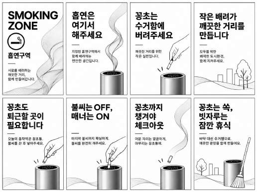
A안
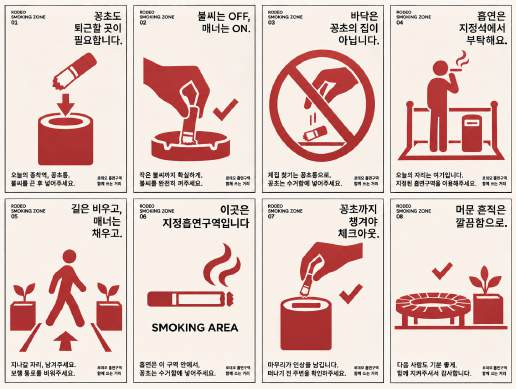
B안
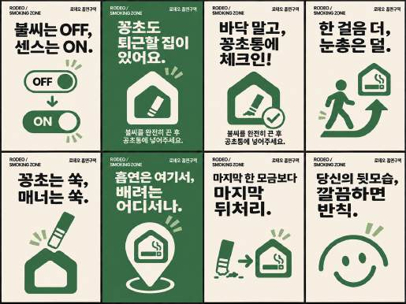
C안
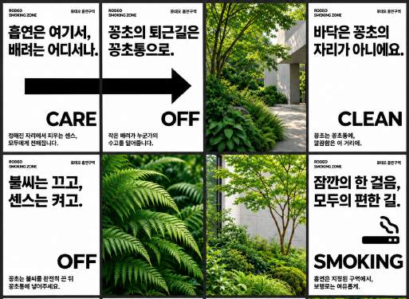
D안
네 안 모두 금지보다 권유의 말투로 꽁초 처리와 배려를 말하였다. 현장에 건 안은 [○안]이다.
1차 「피어봄」은 흡연을 한곳으로 모으고, 휴식은 자연과 함께 두자는 안이다. A 로데오광장에 곡선 벤치를 둘러싼 부스 두 개를 세워 하나는 연초 흡연존, 하나는 전자담배존으로 썼다. 흡연 방식이 다른 사람끼리도 자리를 나누어, 전자담배 이용자가 연초 연기 속에 서지 않게 하였다.
부스의 벽은 블랙 스틸 프레임에 에코 플러스 패트지 배너를 건 배너대로 만들었다. 제1회 심의의견에 따라 상가 쪽 면은 1,845mm 높이로 막고, 광장 쪽 면은 1,320mm로 낮추었다. 벤치 위에는 데스크용 소형 제연기 8대를 나누어 고정해 담배 연기를 빨아들였고, 화이트 스틸 꽁초통 4개를 부스 안에 두었다.
현장 안전은 상업밀집지역 조건에 맞췄다. 주취자 충돌에 대비해 돌출부를 보호하고 시설물을 고정·보강하였으며, 연초 흡연존과 전자담배존에 안전 인력을 각각 최소 1인씩 상시 두었다. 기존 꽁초함은 위치와 상태를 확인해 그대로 활용하였다.
자료: 인천광역시(2026), 인천 창의디자인 사회실험 사업 심의자료
176
들어가기Ⅰ 묻다Ⅱ 찾다Ⅲ 설계하다Ⅳ 실험하다Ⅴ 검증하다Ⅵ 남기다
06로데오
Ⅳ-06구월동 로데오거리·광장1차 실험 「피어봄」
B 거리의 벤치는 화분과 백색 시트, 인천의 향으로 감싸 흡연 자리를 쉬는 자리로 돌려놓았다
바이오필릭 휴게존 시뮬레이션
벤치 아래 물결 시트와 벤치 위 백색 시트가 쉬는 자리의 경계를 그렸다. 식재 + 바닥·벤치 시트 + 안내사인 + 이소의 향 나눔
28개조화 화단 1 · 원형 화분 17 · 사각 화분 10
2,500×7,000mm의자 하부 물결 시트 2매(3M 백색 미끄럼방지)
1,000×450mm의자 위 백색 시트 7매
33개걸이형 이소 향 · 구간마다 3개
400×400×1,200허니콤보드 안내 1개 · 향기와 함께 쉬어 가는 휴게공간
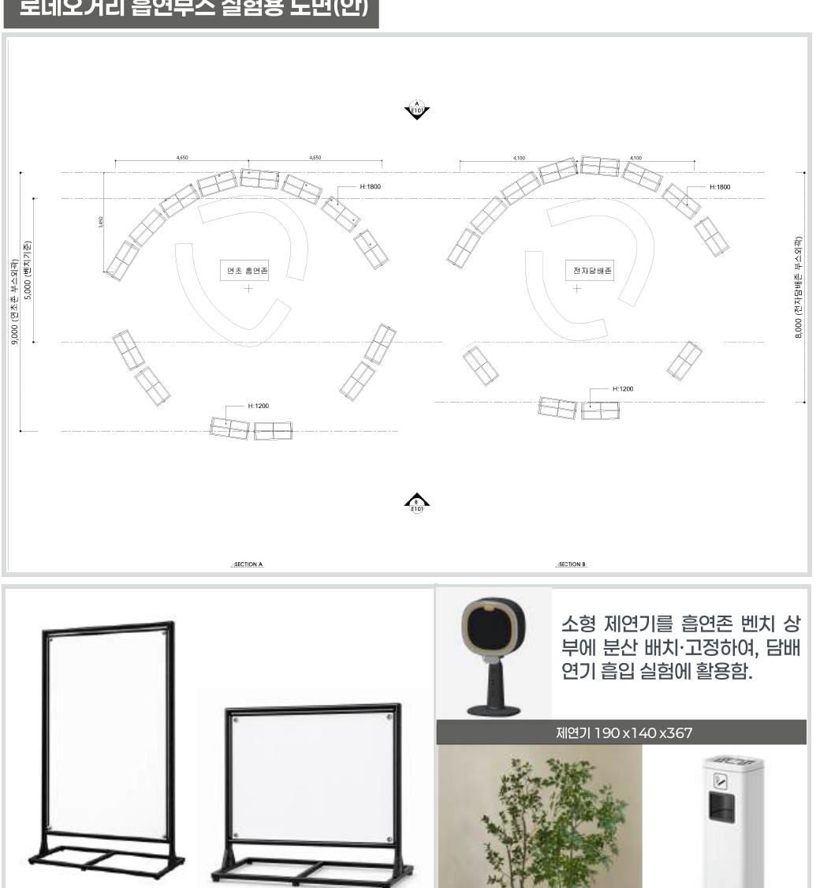
두 부스는 같은 크기의 곡선으로 마주 보게 배치하였다. 로데오거리 흡연부스 실험용 도면(안)
흡연존 구성품
1,845mm높은 배너대 16개 · 1,300×410 · 상가 쪽 벽
1,320mm낮은 배너대 10개 · 1,300×410 · 광장 쪽 벽
8대소형 제연기 190×140×367 · 벤치 상부 고정
4개꽁초통 230×185×685 · 화이트 스틸
2개비흡연존 사인 콘 400×400×750
B 로데오거리의 곡선 벤치는 쉬는 자리이면서 기존 흡연 자리로 쓰이던 곳이었다. 1차는 이 자리를 바이오필릭 휴게존으로 바꾸었다. 화단과 화분 28개로 벤치 둘레에 초록을 더하고, 벤치 아래에는 2,500×7,000mm 물결 시트를, 벤치 위에는 백색 시트를 붙여 쉬는 자리임을 바닥과 좌석에서 함께 알렸다.
향은 사회적협동조합 이소와 함께 더하였다. 걸이형 향 33개를 구간마다 세 개씩 걸고 향기볼과 패브릭 스프레이를 두어, 시민 누구나 인천의 향을 체험하는 향기 나눔형 공공서비스로 운영하였다. 비흡연존 콘 두 개는 휴게존이 흡연 자리가 아님을 짧게 알렸다. 기존 흡연 자리에 자연과 향을 더해 쉼터로 바꾸는 것이 1차 설계의 핵심이었다. 휴게존은 1차 첫날 설치해 2차 마지막 날까지 그대로 두었으므로, 2차 기간의 휴게존 이용도 같은 시설에서 셌다.
자료: 인천광역시(2026), 인천 창의디자인 사회실험 사업 심의자료
177
들어가기Ⅰ 묻다Ⅱ 찾다Ⅲ 설계하다Ⅳ 실험하다Ⅴ 검증하다Ⅵ 남기다
06로데오
Ⅳ-06구월동 로데오거리·광장2차 실험 「이어봄」
2차는 흡연존까지 남은 시간을 길 위에 적어, 가야 할 방향을 숫자로 알려 주었다
지주형 사인 · 첫 지점흡연존 1분 전작은 배려가 누군가의 수고를 덜어줍니다.
지주형 사인 · 둘째 지점흡연존 30초 전당신의 배려가 환경을 지킵니다.
지주형 사인 · 셋째 지점흡연존 15초 전우리 모두 함께 깨끗한 길을 걸어봐요!
숫자는 흡연존에 가까워질수록 줄었고, 문구는 금지 대신 배려를 말하였다. 지주형 사인(400×400) 문안 세 가지
깨끗한 거리를 위한 실천 문구흡연은 흡연존에서, 꽁초는 수거함에 꽁초까지 정리하면, 배려가 완성됩니다
2차 「이어봄」은 1차의 흡연존과 휴게존을 그대로 두고, 두 구역을 잇는 길에 안내를 더하였다. 위원회 사전검토에서 나온 ‘안내표지에 이동 방향과 거리를 표시하라’는 의견이 이 안내의 출발점이었다. 다만 거리를 미터로 적는 대신, 걸어서 걸리는 시간으로 적었다.
바닥에는 ‘흡연존까지 60초’, ‘30초’, ‘15초’를 적은 2,000×300mm 백색 미끄럼방지 시트 26매를 붙였다. 화살표는 흡연존 쪽을 가리키고, 지름 100mm 점 48개가 시트 사이를 이어 길이 끊기지 않게 하였다. 흡연자가 남은 거리를 셈하지 않아도 얼마나 더 가면 되는지 알 수 있게 한 장치였다.
눈높이 위에는 지주형 사인 4개를 달았다. 400×400mm 백색 폼보드를 전신주에 케이블타이로 고정하고, 사인 하단을 지면에서 2,000mm 높이에 두어 보행을 막지 않게 하였다. 사인마다 남은 시간과 함께 짧은 배려 문구를 넣었다.
문구는 금지 대신 권유와 감사의 말투를 택하였다. 실험의 목적이 흡연할 자리로 안내하는 데 있었기 때문이다. ‘흡연은 흡연존에서, 꽁초는 수거함에’라는 실천 문구는 흡연 다음의 행동, 꽁초 처리까지 이어 말하였다.
2차는 11월 18일(수)부터 21일(토)까지 운영하였고, 자료는 20일(금)과 21일(토) 저녁에 모았다. 1차에서 본 구역 인지와 이용에 더해, 사인을 알아보았는지, 사인을 따라 흡연존으로 갔는지, 꽁초를 수거함에 넣었는지를 새로 보았다.
바닥 시트는 3M과 협업한 백색 미끄럼방지 시트였다. 보행자가 밟고 지나가는 자리여서 젖은 상태에서도 미끄럽지 않은 소재가 필요하였다. 1차의 흡연존·휴게존 시설물은 그대로 둔 채 사인만 더하였다.
숫자가 줄어드는 길 · B 휴게존에서 A 흡연존까지
첫 지점흡연존까지 60초 작은 배려가 누군가의 수고를
▶
둘째 지점흡연존까지 30초 당신의 배려가 환경을
▶
셋째 지점흡연존까지 15초 함께 깨끗한 길을
▶
A 로데오광장흡연은 흡연존에서, 꽁초는 수거함에
안내는 남은 시간을 줄여 가며 흡연존까지의 거리를 짧게 느끼게 하고, 도착한 뒤의 행동인 꽁초 처리까지 한 줄로 이었다. 2차 바닥·지주형 사인 문안의 순서
자료: 인천광역시(2026), 인천 창의디자인 사회실험 사업 심의자료
178
들어가기Ⅰ 묻다Ⅱ 찾다Ⅲ 설계하다Ⅳ 실험하다Ⅴ 검증하다Ⅵ 남기다
06로데오
Ⅳ-06구월동 로데오거리·광장2차 실험 「이어봄」
2차는 1차 위에 바닥 시간 사인 · 점 유도 · 지주형 사인 세 가지를 더하고, 나머지는 그대로 두었다
2차 사이니지 시뮬레이션 · 로데오거리
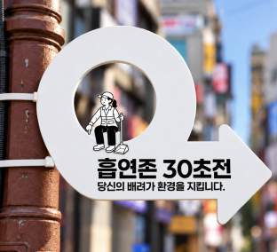
지주형 사이니지
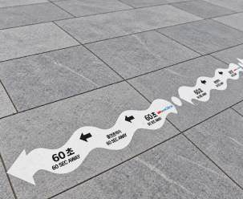
바닥 안내 사이니지
바닥의 흰 띠와 전신주의 원형 사인이 B 거리에서 A 광장까지 같은 방향을 가리켰다. 2차 사이니지 시뮬레이션(합성)
1차에 더한 것 · 바꾼 것
바닥 시간 사인
1차 · 바닥 안내 없음
60·30·15초 2,000×300 시트 26매
근거 · 사전검토 ‘이동 방향과 거리 표시’
점 유도
1차 · 없음
Ø100 점 48개로 시트 사이를 이음
근거 · 끊기지 않는 경로 안내
지주형 사인
1차 · 없음
전신주 400×400 4개 · 하단 2,000mm
근거 · 보행을 막지 않는 눈높이 위
실천 문구
1차 · 배너의 매너 문구
+ 흡연은 흡연존에서, 꽁초는 수거함에
근거 · 꽁초 처리 행동까지 안내
관찰 항목
구역 인지 · 흡연존·휴게존 이용
+ 사인 인지 · 흡연존 유도 · 꽁초 처리
근거 · 2차 가설
수집일
11.15(일) · 16(월) 저녁
11.20(금) · 21(토) 저녁
근거 · 3M 제작·설치 일정
2차의 가설은 하나였다. 흡연공간을 안내하는 유도사인을 더하면, 사람들이 흡연공간을 더 쉽게 알아보고 그곳에서 흡연하는 사람이 늘어날까. 그래서 흡연존과 휴게존의 구성, 배너와 제연기, 식재와 향은 하나도 바꾸지 않았다.
달라진 것은 길뿐이었다. 1차에서 흡연존은 광장에 있었지만, 거리에서 그 자리를 알려 주는 표시는 없었다. 2차는 그 빈 길을 세 개의 숫자와 한 줄의 점으로 채웠다.
숫자 옆의 실천 문구는 설득 메시지가 건물 출입구 앞 흡연을 줄였다는 Nijssen 외(2023)의 결과를 받아 붙였다. 그 효과는 사인 인지·흡연존 유도·꽁초 처리 세 항목으로 새로 관찰하였다.
사인은 바닥에 붙이는 시트와 전신주에 케이블타이로 묶는 폼보드여서, 1차의 흡연존·휴게존 시설을 건드리지 않고 더하고 뗄 수 있었다.
26매바닥 시간 사인
48개Ø100 점 유도
4개지주형 사인
4일2차 운영 11.18–21
1차와 2차 사이에 달라진 것은 길 위의 안내 하나였다. 그래서 2차의 증분은 안내가 더한 몫으로 읽었다누적형 설계 A → A + B
자료: 인천광역시(2026), 인천 창의디자인 사회실험 사업 심의자료
179
들어가기Ⅰ 묻다Ⅱ 찾다Ⅲ 설계하다Ⅳ 실험하다Ⅴ 검증하다Ⅵ 남기다
06로데오
Ⅳ-06구월동 로데오거리·광장현장 배치
휴게존은 B 로데오거리에, 흡연존은 A 로데오광장에 두고 그 사이의 길을 60·30·15초로 나누었다
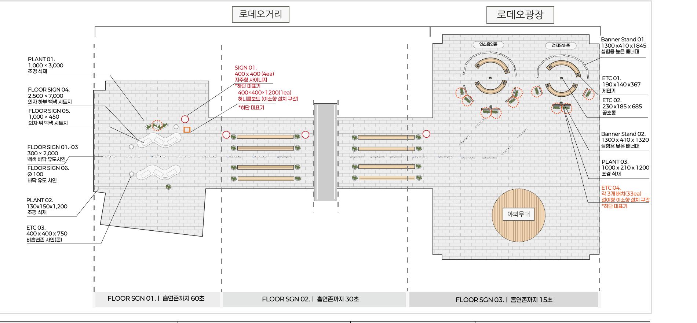
심의도서 설치 계획 원도 · 로데오거리(좌)–로데오광장(우)
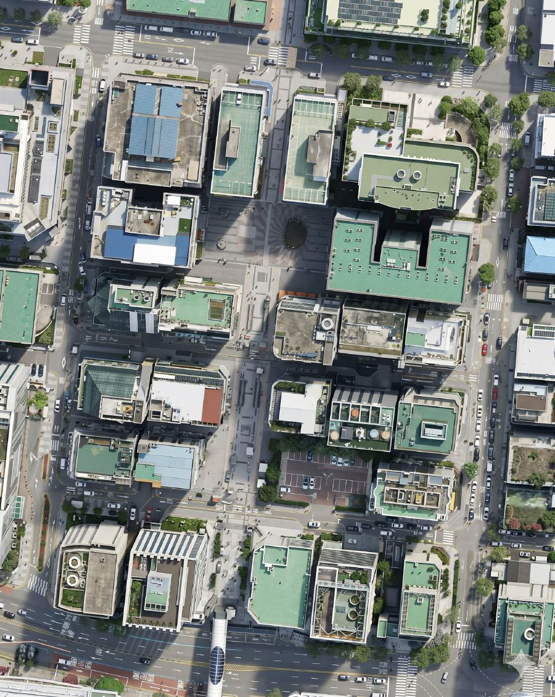
심의도서 항공사진 · 로데오거리·광장 일대
거리와 광장을 세로축으로 돌려 그렸다. 위쪽 B 휴게존에서 아래쪽 A 흡연존으로 걸어가면 60초, 30초, 15초 사인을 차례로 지난다. 세로판 재작도 개념 배치도
B휴게존로데오거리 곡선 벤치 · 식재·시트·향
60첫 지점휴게존을 막 벗어난 거리 구간
30둘째 지점횡단 구간에 닿기 전 거리
15셋째 지점광장 입구, 흡연존이 보이는 자리
A흡연존로데오광장 연초·전자담배 부스
두 구역은 거리 한쪽 끝과 광장 사이에 떨어져 놓였다. 휴게존은 기존 흡연 자리로 쓰이던 거리의 곡선 벤치 자리에, 흡연존은 상가 출입구에서 떨어진 광장 안쪽에 두어 연기가 보행로와 휴게공간으로 흘러들지 않게 하였다. 지주형 사인은 길가 전신주 네 곳에 달았고, 실제 위치는 [전신주 번호·지점]이었다. 광장의 야외무대와 상가 진출입로는 통로로 비워 두었다.
자료: 인천광역시(2026), 인천 창의디자인 사회실험 사업 심의자료
180
들어가기Ⅰ 묻다Ⅱ 찾다Ⅲ 설계하다Ⅳ 실험하다Ⅴ 검증하다Ⅵ 남기다
06로데오
Ⅳ-06구월동 로데오거리·광장설치·운영 기록
1차 사흘 뒤 시설을 걷지 않고 2차를 이어 붙여, 일주일 동안 한 거리에서 두 실험을 운영하였다
점은 자료를 모은 날이다. 차수마다 주말 저녁 하루와 평일 저녁 하루를 넣었다. 1차 11.15(일) · 16(월), 2차 11.20(금) · 21(토) · 사전조사 9.14(월) 저녁
1차 흡연존 시뮬레이션
1차A 광장 흡연존
운영
11.15(일)–17(화)
구성
연초·전자담배 부스 · 제연기 8
안전
존별 안전 인력 1인 이상
수집
11.15 · 16 저녁
1차 휴게존 시뮬레이션
1차B 거리 휴게존
운영
11.15(일)–21(토) 유지
구성
식재 28 · 시트 · 향 33
협력
이소 · 3M
참여
시민디자인단 7명 설치
2차 사이니지 시뮬레이션
2차B → A 시간 안내
운영
11.18(수)–21(토)
구성
바닥 26매 · 점 48 · 지주 4
협력
3M 바닥 시트
수집
11.20 · 21 저녁
설치와 철거, 현장 관찰과 인터뷰, 분석은 수행기관이 맡았다. 흡연존과 휴게존은 1차 첫날 설치해 2차 마지막 날까지 같은 자리에 두었고, 2차의 사인만 18일에 더하였다. 인천시·남동구 공원녹지과·청소행정과와 공문·설문·장소를, 상인협회와 실험 안내와 현장 운영을 협의하였다.
운영 동안 주의 표지를 붙이고 상주 인력이 시설 상태를 점검하였다. 관찰자는 흡연·휴게 장면에 개입하지 않고 같은 지점에서 셌다. 날씨와 상가 행사, 청소 시점 같은 특이사항은 [특이사항]이었다.
1차와 2차가 이어 붙어 있었기 때문에 흡연존과 휴게존은 일주일 내내 문을 닫지 않았다. 2차 자료는 사인을 더한 18일 이후, 20일과 21일 저녁에 모았고, 1차 자료와 섞지 않았다. 관찰 시간은 사전조사와 같은 저녁 [00]시–[00]시였다.
현장 운영 원칙 일곱 거점 공통 · 로데오 적용
안전요원 3명 이상대상지별 배치 존별 상시 1인 이상
관찰자 3인 이내비개입 관찰 같은 지점·같은 계수
같은 저녁 시간대사전조사와 같은 밀집 시간
특이사항 기록날씨·상가 행사 청소 시점·시설 상태
자료: 인천광역시(2026), 인천 창의디자인 사회실험 사업 심의자료
181
들어가기Ⅰ 묻다Ⅱ 찾다Ⅲ 설계하다Ⅳ 실험하다Ⅴ 검증하다Ⅵ 남기다
06로데오
Ⅳ-06구월동 로데오거리·광장정량 결과 · 표본
사전조사와 같은 저녁 시간에서 1차 [000]건, 2차 [000]건의 행태 관찰 자료와 스티커 응답을 모았다
사전조사 9.14(월) 저녁에는 시민 표본 200을 채워 기준값으로 삼았다. 스티커 응답 가운데 흡연자 비율 1차 [00]% · 2차 [00]%
흡연 여부 · 수집일별 스티커 응답
흡연자와 비흡연자가 같은 흡연존을 다르게 평가할 수 있어 응답자를 나누어 보았다. 막대 위 값은 수집일별 응답 수
관찰 단위는 흡연이나 휴식이 일어난 장면이다. 같은 사람이 여러 번 담배를 피우면 장면마다 따로 셌고, 흡연 장소는 흡연존 안, 휴게존 안, 그 밖의 거리로 나누어 기록하였다.
스티커 설문은 지나는 시민이 판 위에 5점 척도로 붙이는 방식이었다. 중복 응답의 제외 기준은 [같은 판 연속 부착]으로 정하였고, [00]건을 제외하였다.
응답자 중 흡연자는 1차 [00]명, 2차 [00]명이었다. 두 차수의 흡연자 비율 차이는 [0]%p였다.
인터뷰는 흡연존과 휴게존을 이용한 사람 가운데 1차 [00]명, 2차 [00]명과 하였다. 심의 단계에서 정한 최소 참여인원은 차수별 30명이었다.
섞지 않은 세 가지 단위
장면 단위 · 관찰흡연·휴게 장면 수사전 표본 200 → 1차 [000]건 · 2차 [000]건. 흡연존 이용 비율의 분모
사람 단위 · 스티커 설문응답자 수1차 [000]명 · 2차 [000]명. 인지·편의·만족·준수 의향 5점 평균의 분모
발언 단위 · 인터뷰의견 수인터뷰 [00]명의 의견 [000]건. 시민디자인단 7명의 설치 참여는 별도 기록
세 단위는 서로 더하거나 나누지 않았다. 행동 지표의 분모는 관찰 장면, 의향 지표의 분모는 설문 응답자이며, 인터뷰 의견은 주제를 나누는 데에만 썼다.
자료 품질 점검 사전 · 1차 · 2차 대조
관찰 시간차수별 저녁 [00]시–[00]시
관찰자지점별 [0]인 3인 이내 · 비개입
계수 지점사전조사와 같은 [0]개 지점
날씨1차 [맑음] 2차 [맑음]
자료: 인천광역시(2026), 인천 창의디자인 사회실험 사업 심의자료 · 로데오 1·2차 관찰·설문
182
들어가기Ⅰ 묻다Ⅱ 찾다Ⅲ 설계하다Ⅳ 실험하다Ⅴ 검증하다Ⅵ 남기다
06로데오
Ⅳ-06구월동 로데오거리·광장정량 결과 · 핵심 지표
관찰 구간의 흡연 가운데 흡연존 안 흡연은 사전 [00]%, 1차 [00]%, 2차 [00]%로 [늘었다]
① 흡연존 안 흡연 비율
관찰한 흡연 장면 가운데 A 광장 흡연존 안에서 일어난 비율. 0–100% 고정 축
② B 휴게존의 쓰임
휴게존 안 흡연 장면과 착석 이용 장면 수(저녁 2일 합계). 사전·1·2차 같은 축
사전→1차의 차이는 구역 분리의 몫, 1차→2차의 차이는 안내를 더한 몫으로 읽었다. 사전조사에는 흡연존이 없었으므로, 같은 광장 구역 안에서 일어난 흡연을 기준값으로 셌다.
③ 5점 스티커 설문 평균 · 1차 ○ 2차 □
네 문항은 1차와 2차에 같은 5점 스티커 척도로 물었다. 시간 사인 인지 문항은 2차에만 두었다.
흡연존 안 흡연 비율은 사전 [00]%에서 1차 [00]%로 [00]%p [높아졌고], 안내를 더한 2차에는 [00]%로 다시 [00]%p [높아졌다]. 같은 기간 B 휴게존 안 흡연 장면은 [00]건에서 [00]건으로 [줄었다].
스티커 설문에서 구역 인지 평균은 1차 [0.0]점, 2차 [0.0]점이었고, 이용수칙 준수 의향은 [0.0]점에서 [0.0]점으로 바뀌었다. 의향 점수의 변화가 실제 흡연존 이용의 변화와 같은 방향이었는지는 [같은 방향]이었다.
지표 ① 정의흡연존 안 흡연 비율흡연존 안 흡연 장면 ÷ 관찰 구간 전체 흡연 장면. 분모는 같은 저녁 시간대·같은 지점
지표 ② 정의휴게존의 쓰임B 휴게존 안 흡연 장면과 착석 이용 장면을 저녁 2일 합계로 셈
지표 ③ 정의5점 평균문항별 스티커 점수의 평균. 분모는 그 문항에 붙인 스티커 수
자료: 로데오 사전·1·2차 행태 관찰 · 5점 스티커 설문
183
들어가기Ⅰ 묻다Ⅱ 찾다Ⅲ 설계하다Ⅳ 실험하다Ⅴ 검증하다Ⅵ 남기다
06로데오
Ⅳ-06구월동 로데오거리·광장정량 결과 · 조건 비교
시간 사인 세 지점을 지난 흡연자 가운데 [00]%가 흡연존까지 이어 갔다
2차 · 60초에서 흡연존까지, 지점별로 이어 간 사람
사인 지점마다 흡연자가 다음 지점으로 계속 갔는지, 중간에 멈춰 흡연했는지를 따라 셌다. 중간 지점에서 흡연한 장면 [00]건 · 반대 방향으로 간 장면 [00]건
평일·주말 저녁으로 나눈 흡연존 안 흡연 비율
사전조사는 월요일 저녁 하루였으므로 평일 칸에만 기준값이 있다. 0–100% 고정 축 · 차수마다 평일 저녁 1일 · 주말 저녁 1일
2차의 길 위에서 흡연자는 60초 지점 [000]명, 15초 지점 [000]명이 지났고, 이 가운데 [000]명이 흡연존에 들어가 담배를 피웠다. 가장 많이 빠져나간 구간은 [30초–15초 사이 횡단 구간]이었다.
평일 저녁과 주말 저녁으로 나누어 보아도 흡연존 안 흡연 비율은 [같은 방향으로] 움직였다. 주말 저녁의 비율은 평일보다 [00]%p [낮았는데], 이 차이는 [주말 유동인구와 음주 이용]과 함께 읽었다.
흡연존 안에서는 연초 흡연존 [00]%, 전자담배존 [00]%로 이용이 나뉘었고, 전자담배 이용자가 연초 흡연존에서 흡연한 장면은 [00]건이었다.
결과를 읽을 때 함께 적은 외부 조건 로데오 1·2차
연속 운영1차 시설 위에 2차 노출 기간이 누적
수집 요일1차 일·월 · 2차 금·토 3M 일정에 따른 조정
날씨·기온[1차 · 2차 특이사항]
상가·청소[행사 · 청소 시점]
누적형 실험의 2차 값에는 1차의 구역 분리가 이미 들어 있다. 그래서 1차→2차의 증분은 위의 네 조건을 함께 적어 두고 읽었다. 특히 수집 요일이 일·월에서 금·토로 바뀐 점은 흡연존 이용의 차이를 키우거나 줄일 수 있는 조건이었다.
요일 조건을 줄이기 위해 평일끼리, 주말끼리 따로 맞대어 보았다. 두 비교에서 2차의 증분이 모두 [양(+)]이었을 때에만 안내를 더한 효과로 판단하였다.
자료: 로데오 사전·1·2차 행태 관찰
184
들어가기Ⅰ 묻다Ⅱ 찾다Ⅲ 설계하다Ⅳ 실험하다Ⅴ 검증하다Ⅵ 남기다
06로데오
Ⅳ-06구월동 로데오거리·광장정량 결과 · 소결
숫자로 보면, 흡연을 흡연존으로 모은 힘은 [구역 분리]에서 [더 컸고] 안내는 그 위에 [더하였다]
[+00]%p구역 분리의 몫 사전 → 1차 흡연존 안 흡연 비율
[+00]%p안내 추가의 몫 1차 → 2차 흡연존 안 흡연 비율
[−00]건B 휴게존 안 흡연 장면 사전 → 2차
로데오거리의 숫자는 하나의 질문에 두 번 답하였다. 자리를 나누면 흡연이 모이는가, 그리고 길을 알려 주면 더 모이는가.
첫 번째 답은 1차에서 나왔다. 광장에 흡연존을 세우고 거리의 벤치를 휴게존으로 바꾸자, 관찰 구간의 흡연 가운데 흡연존 안 흡연의 비율이 사전 [00]%에서 [00]%로 바뀌었다. 같은 기간 휴게존 안 흡연 장면은 [00]건에서 [00]건이 되었다.
두 번째 답은 2차의 증분이다. 시간 사인을 더한 뒤 비율은 [00]%p 더 [올랐고], 평일·주말 비교에서도 [같은 방향]이었다. 다만 이 값에는 흡연존이 나흘 더 그 자리에 있었다는 노출의 누적이 함께 들어 있다.
의향과 행동은 [같은 방향이었다]. 이용수칙 준수 의향은 5점 만점에 [0.0]점이었고, 실제 꽁초 처리 행동은 관찰 장면의 [00]%였다.
흡연존 안 흡연 비율의 분해
막대는 사전 기준값 위에 1차·2차의 몫을 차례로 쌓은 것이다. 사전 기준값 · 구역 분리의 몫 · 안내의 몫
읽을 때 주의한 점2차의 몫에는 안내 효과와 노출 누적이 섞여 있다.
두 몫을 나누어 본 것은 다음 결정 때문이다. 구역 분리의 몫이 크면 흡연존의 자리와 벽이 고정시설의 핵심이 되고, 안내의 몫이 크면 시간 사인을 다른 거리에도 옮길 수 있다. 결과는 구역 분리의 몫 [00]%p, 안내의 몫 [00]%p로 [구역 분리 쪽이 컸다].
휴게존의 변화는 흡연존 이용과 따로 읽었다. 휴게존 안 흡연 장면은 사전 [00]건에서 2차 [00]건으로 바뀌었고, 착석 이용 장면은 [00]건에서 [00]건이 되었다. 흡연이 흡연존으로 옮겨 간 만큼 벤치가 쉬는 자리로 돌아왔는지를 보는 값이었다.
평일과 주말로 나누어 보아도 두 몫의 크기 순서는 [같았다]. 요일 조건이 결과를 [뒤집지 않았으므로], 판정에는 저녁 이틀의 값을 합쳐 썼다. 꽁초 처리는 2차에 새로 관찰한 항목이어서 1차와 맞대지 않고, 2차 안에서 수거함에 넣은 장면의 비율로만 읽었다.
흡연을 모은 것은 [자리]였고, 안내는 그 자리까지 가는 사람을 [00]%p 더하였다정성 결과와 통합 해석에서 맞춤
자료: 로데오 사전·1·2차 행태 관찰 · 5점 스티커 설문
185
들어가기Ⅰ 묻다Ⅱ 찾다Ⅲ 설계하다Ⅳ 실험하다Ⅴ 검증하다Ⅵ 남기다
06로데오
Ⅳ-06구월동 로데오거리·광장정성 결과 · 자료
정성 자료는 현장 인터뷰 · 행태 관찰 기록 · 설치 참여 기록 세 갈래로 모았다
현장 시민 인터뷰1·2차 각 최소 30명 · 이용 후 개선 의견
1차 응답자[00]명
2차 응답자[00]명
흡연자 / 비흡연자[00] / [00]
상인 의견[00]건
행태 관찰 기록같은 지점 · 같은 계수 · 관찰자 3인 이내
사전 9.14 저녁표본 200
1차 11.15 · 16 저녁[000]장면
2차 11.20 · 21 저녁[000]장면
꽁초 처리 장면[00]건
설치 참여 기록시민디자인단 · 1차 설치
설치 참여7명
참여 소감·제안[00]건
상인협회 협조 기록[00]건
설치 사진[00]컷
인터뷰는 말, 관찰은 행동, 설치 참여 기록은 과정을 담았다. 세 자료는 같은 주제 틀로 묶어 읽었다.
인터뷰에서 물은 것
1차 · 흡연존 · 휴게존흡연존을 어떻게 알았나어디에서 흡연존을 보았고, 그쪽으로 간 이유는 무엇인가
▶
2차 · 사이니지사인을 따라왔나60·30·15초 사인을 보았는가, 그 숫자가 이동에 영향을 주었는가
1차 · 휴게존쉬는 자리로 느꼈나식재·시트·향이 있는 벤치에서 앉아 쉬어 보았는가
▶
2차 · 꽁초꽁초를 어디에 두었나흡연 뒤 꽁초를 수거함에 넣었는가, 그렇지 않았다면 왜인가
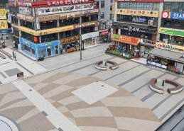
A 로데오광장 · 실험 전
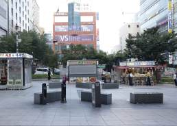
B 로데오거리 · 실험 전
두 구역의 실험 전 모습. 인터뷰는 두 구역과 그 사이 길에서 진행
코딩의 두 축 · 누가 말했고 무엇을 말했나
누가응답자 구분
흡연자(연초)[00]흡연자(전자담배)[00]비흡연자[00]상인[00]
무엇을주제 코드
구역 인지[00]거리·시간[00]연기·냄새[00]쉬는 자리[00]꽁초 처리[00]문구의 말투[00]
어떻게반응의 결
긍정[00]불편[00]제안[00]
인터뷰는 흡연존과 휴게존을 이용한 직후의 시민에게 짧게 물었다. 흡연자와 비흡연자는 같은 시설을 서로 다른 자리에서 경험하기 때문에, 응답은 먼저 흡연 여부와 흡연 방식으로 나누고 주제 코드를 붙였다. 인터뷰 응답자는 차수별 최소 30명을 기준으로 모았다.
관찰 기록은 인터뷰가 말하지 않는 행동을 보완하였다. 흡연자가 어느 지점에서 담배를 꺼냈는지, 흡연존을 지나쳐 갔는지, 꽁초를 어디에 두었는지를 장면 단위로 적었다. 상인의 의견은 시민 응답과 섞지 않고, 영업·출입구·청소처럼 상가 쪽 조건을 묻는 코드로 따로 묶었다.
설치 참여 기록은 시민디자인단 7명이 1차 흡연존과 휴게존을 함께 설치한 과정을 담았다. 참여자의 소감과 제안은 [00]건, 상인협회 협조 기록은 [00]건이었고, 설치 사진은 시설의 위치와 상태를 확인하는 자료로 썼다.
자료: 로데오 1·2차 인터뷰·관찰 기록 · 인천광역시(2026), 인천 창의디자인 사회실험 사업 심의자료
186
들어가기Ⅰ 묻다Ⅱ 찾다Ⅲ 설계하다Ⅳ 실험하다Ⅴ 검증하다Ⅵ 남기다
06로데오
Ⅳ-06구월동 로데오거리·광장정성 결과 · 주제 1
흡연자는 흡연존을 [가까움]의 문제로, 비흡연자는 [연기의 거리]의 문제로 말하였다
흡연자의 말
흡연존을 찾아간 이유 · 지나친 이유
주제 코드 · 구역 인지 · 거리·시간
응답자 A · 1차 · 연초 흡연자 · 흡연존 위치 관련
응답자 B · 1차 · 전자담배 이용자 · 구역 분리 관련
응답자 C · 2차 · 연초 흡연자 · 시간 사인 관련
비흡연자의 말
휴게존에서 느낀 것 · 남은 불편
주제 코드 · 쉬는 자리 · 연기·냄새
응답자 D · 1차 · 비흡연자 · 휴게존 이용 관련
응답자 E · 1차 · 비흡연자 · 연기·냄새 관련
응답자 F · 2차 · 비흡연자 · 거리 안내 관련
같은 흡연존을 두고 흡연자는 ‘얼마나 가까운가’를, 비흡연자는 ‘연기가 얼마나 멀리 있는가’를 [먼저 말하였다]. 1·2차 현장 인터뷰에서 고른 응답 자리
디자인이 준 것 → 시민이 쓴 말
1차 · 구역 분리연초 흡연존 / 전자담배존흡연 방식에 따라 두 부스를 나눔
▶
시민이 부른 이름[흡연 부스 · 담배 구역 …]응답자가 흡연존을 가리킬 때 쓴 말 상위 [3]개
2차 · 시간 안내흡연존까지 60·30·15초남은 시간을 숫자로 적은 바닥·지주형 사인
▶
시민이 떠올린 것[숫자 · 화살표 · 흰 띠 …]사인을 기억한 응답자가 먼저 떠올린 요소
흡연자의 응답에서 흡연존을 쓰는 이유로 가장 많이 나온 것은 [가까움 · 눈에 띔 · 앉을 자리]였다. 흡연존을 지나친 이유는 [동행자와 떨어지기 싫음 · 짧게 피우고 감] 같은 것이었다. 전자담배 이용자는 연초 연기와 자리가 나뉜 점을 [긍정적으로] 말하였다.
비흡연자가 먼저 말한 것은 [휴게존 주변의 연기]였다. 휴게존 벤치에 앉았을 때 연기와 냄새가 [줄었다]는 응답이 [00]건, 여전히 [남았다]는 응답이 [00]건이었다. 향에 대한 반응은 다음 쪽의 주제로 묶었고, 상가 앞을 지나던 비흡연자의 응답은 휴게존 응답과 나누어 적었다.
두 집단의 응답이 겹친 주제는 [구역 인지]였다. 흡연존이 [어디에 있는지 알기 쉬웠다]는 응답이 두 집단에서 [00]건 나왔다. 이 일치는 정량의 구역 인지 점수와 [맞았다].
주제 코드별 응답 수 · 흡연자와 비흡연자
두 집단이 가장 많이 말한 주제가 [달랐다]. 막대 길이는 주제 코드가 붙은 응답 수
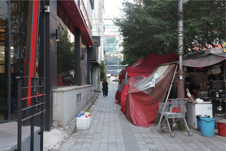
실험 전 상가 앞 보행로
실험 전 상가 앞 보행로에서는 흡연자와 비흡연자의 동선이 섞였다. 사전 현장조사 사진
자료: 로데오 1·2차 현장 인터뷰
187
들어가기Ⅰ 묻다Ⅱ 찾다Ⅲ 설계하다Ⅳ 실험하다Ⅴ 검증하다Ⅵ 남기다
06로데오
Ⅳ-06구월동 로데오거리·광장정성 결과 · 주제 2
연기와 냄새, 상가 앞, 향, 문구의 말투가 공존의 조건을 다시 묻게 하였다
연기와 냄새제연기
부스 벽과 제연기가 연기를 붙잡아 두었나
상가 쪽 1,845mm 벽과 벤치 위 제연기 8대는 연기를 휴게공간으로 보내지 않기 위한 장치였다.
응답자 G · 1차 · 비흡연자 · 연기 관련
응답자 H · 2차 · 흡연자 · 제연기 관련
상인상가 앞
흡연이 모인 자리가 영업에 부담이 되었나
흡연존은 상가 출입구에서 떨어진 광장 안쪽에 두었고, 상인협회와 운영을 협의하였다.
상인 I · 1차 · 출입구·영업 관련
상인 J · 2차 · 혼잡·청소 관련
쉬는 자리의 향이소
향과 초록이 벤치를 쉬는 자리로 바꾸었나
걸이형 향 33개와 화분 28개로 기존 흡연 자리를 휴게존으로 바꾸었다.
응답자 K · 1차 · 비흡연자 · 향 관련
응답자 L · 2차 · 비흡연자 · 휴게존 관련
사이니지문구의 말투
금지 대신 배려를 말한 문구는 어떻게 들렸나
‘작은 배려가 누군가의 수고를 덜어줍니다’처럼 권유와 감사의 말투를 썼다.
응답자 M · 2차 · 흡연자 · 문구 관련
응답자 N · 2차 · 비흡연자 · 문구 관련
주제 2공존의 조건
네 주제는 흡연존이 흡연을 모았는지보다, 흡연존이 거리에 머물 수 있는 조건을 묻는 틀이었다. 왼쪽은 공간, 오른쪽은 사람과 말에 관한 주제
반응이 모인 자리를 원도 위에 표시하였다. 연기 [00] · 향 [00] · 문구 [00]건
연기에 대한 반응은 [상가 쪽 높은 벽 바깥]에서 많이 나왔다. 제연기는 [벤치 위 연기를 줄였다]는 응답과 [소리·크기가 눈에 띄었다]는 응답으로 갈렸다.
향은 휴게존을 기억하는 단서로 [쓰였다]. 휴게존을 [향기 나는 곳]으로 부른 응답이 [00]건이었다. 문구의 말투는 흡연자에게 [거부감이 적었다].
상인의 응답은 [출입구 앞 연기와 청소 시점]에 모였다. 흡연존을 광장 안쪽에 두고 상가 쪽 벽을 높인 것이 상인 협의의 조건이었으므로, 이 응답은 흡연존 위치를 판정할 때 함께 보았다.
자료: 로데오 1·2차 현장 인터뷰·관찰 기록
188
들어가기Ⅰ 묻다Ⅱ 찾다Ⅲ 설계하다Ⅳ 실험하다Ⅴ 검증하다Ⅵ 남기다
06로데오
Ⅳ-06구월동 로데오거리·광장정성 결과 · 소결
정성 자료에서 공존의 조건은 흡연존의 [가까움]과 휴게존의 [연기 차단]으로 모였다
1 · 알아보기흡연존을 안다
2 · 옮겨 가기흡연존으로 간다
3 · 머무르기휴게존에서 쉰다
4 · 치우기꽁초를 넣는다
1차
[●][광장의 부스를 알아봄]
[◐][가까운 사람만 이동]
[●][향·초록이 쉼을 도움]
[◐][부스 안 꽁초통 이용]
2차
[●][숫자 사인으로 위치 인지]
[●][사인을 따라 이동]
[●][1차와 비슷]
[●][수거함 문구 기억]
● 뚜렷하게 나타남 · ◐ 일부 나타남 · ○ 나타나지 않음. 1·2차 인터뷰와 관찰 기록을 함께 판정
인터뷰와 관찰 기록은 흡연이 모이는 과정을 알아보기·옮겨 가기·머무르기·치우기 네 단계로 나누어 판정하였다. 흡연자의 응답에서는 [가까움]이, 비흡연자의 응답에서는 [연기와의 거리]가 가장 많이 나왔다.
1차의 구역 분리가 뚜렷하게 나타난 단계는 [알아보기·머무르기]였다. 광장의 부스를 알아보았다는 응답이 [00]건, 향과 초록을 더한 벤치를 쉬는 자리로 말한 응답이 [00]건이었다. 흡연존까지 걸어가는 단계에서 빠져나간 흡연자는 [거리가 먼 흡연자]였다.
2차의 시간 안내는 옮겨 가기 단계를 겨냥한 장치였다. 응답자들은 60·30·15초를 [‘가깝다’는 신호]로 읽었고, 사인을 따라 광장까지 온 사람은 [00]명이었다. 수거함 문구를 기억한 응답은 [00]건이었다.
네 단계 가운데 1·2차의 차이가 가장 컸던 것은 [옮겨 가기]였다. 1차에서 흡연존까지 걸어간 흡연자는 주로 [광장 가까이에서 담배를 꺼낸 사람]이었고, 2차에는 [60초 지점부터 사인을 따라온 사람]이 더해졌다. 머무르기 단계는 두 차수가 [비슷하였다]. 휴게존은 두 차수 내내 같은 시설로 운영되었다.
상가 앞 연기와 혼잡, 청소의 부담을 말한 응답은 [00]건이었다. 이 주제는 부스와 사인의 디자인보다 흡연존의 위치와 관리 주체에 걸린 것이어서, 설계 반영의 조건으로 따로 넘겼다.
사인을 보고도 길에서 흡연한 장면은 [00]건이었고, 주로 [동행자와 함께 걷던 흡연자]에게서 나왔다.
정량과 맞춰 본 점정량의 증분이 컸던 [옮겨 가기] 단계와 정성에서 갈린 단계가 [겹쳤다].
반례사인을 보고도 길에서 흡연한 장면 [00]건, 휴게존 안 흡연 [00]건.
남은 물음흡연존을 상설로 둘 때 연기와 청소를 누가 감당하는가는 판정에서 [수정 · 관리 주체 협의]로 정리하였다.
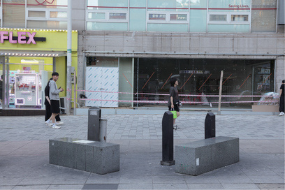
실험 전 보행로 흡연시설
공존의 조건으로 [가까운 흡연존]과 [연기가 닿지 않는 휴게존]이 가장 많이 말해졌다통합 해석에서 정량 결과와 맞춤
자료: 로데오 1·2차 현장 인터뷰·관찰 기록
189
들어가기Ⅰ 묻다Ⅱ 찾다Ⅲ 설계하다Ⅳ 실험하다Ⅴ 검증하다Ⅵ 남기다
06로데오
Ⅳ-06구월동 로데오거리·광장통합 해석
흡연은 [자리를 나누었을 때] 모였고, 안내는 그 자리까지 가는 길을 [짧게 하였다]
Q구역 분리와 유도사인은 흡연존 이용과 휴게공간 사용을 바꾸는가?
구역 분리흡연이 흡연존으로 모였는가
정량흡연존 안 흡연 비율 사전 [00]% → 1차 [00]%
정성흡연자는 흡연존을 [가까운 자리]로 말함
▶
[1차에서 00%p 모였다]
휴게공간B 거리의 벤치가 쉬는 자리가 되었는가
정량휴게존 안 흡연 [00] → [00]건 · 착석 [00] → [00]건
정성향과 초록을 쉬는 자리의 단서로 말함 [00]건
▶
[흡연은 줄고 착석은 늘었다]
유도사인안내가 흡연존까지의 이동을 더했는가
정량1차 → 2차 증분 [+00]%p · 세 지점 통과 뒤 도착 [00]%
정성숫자를 [‘가깝다’는 신호]로 읽음
▶
[평일·주말 모두 더하였다]
200사전조사 시민 표본
[000]건1·2차 행태 관찰 장면 합계
[000]명1·2차 스티커 설문 응답 합계
[00]명1·2차 현장 인터뷰 합계
로데오거리의 답흡연을 모은 것은 [가깝고 분명한 자리]였고, 안내는 그 자리를 [더 가깝게 느끼게] 하였다
정량과 정성은 [같은 순서로] 답하였다. 자리를 나눈 1차에서 흡연은 흡연존으로 [모였고], 시민들도 흡연존을 [알아보기 쉽다]고 말하였다. 휴게존은 향과 초록 덕분에 쉬는 자리로 [이야기되었다].
2차의 안내는 그 위에 [00]%p를 더하였다. 이 몫에는 흡연존이 1차부터 같은 자리에 있었다는 익숙함도 섞여 있어, 판정에서는 안내 요소를 구역 요소와 따로 보았다.
정량과 정성이 어긋난 곳도 기록하였다. 준수 의향은 [높았지만] 길에서 흡연한 장면은 [00]건 남았고, 상가 앞 연기에 대한 불편은 [줄지 않았다]. 이 반례는 수정 판정의 근거로 넘겼다.
두 차수의 몫을 나누어 본 것은 판정의 근거가 서로 달랐기 때문이다. 구역 분리의 몫은 흡연존의 위치와 벽을, 안내의 몫은 시간 사인과 문구를 판정하는 근거로 각각 넘겼다.
자료: 로데오 1·2차 관찰·설문·인터뷰 · 인천광역시(2026), 인천 창의디자인 사회실험 사업 심의자료
190
들어가기Ⅰ 묻다Ⅱ 찾다Ⅲ 설계하다Ⅳ 실험하다Ⅴ 검증하다Ⅵ 남기다
06로데오
Ⅳ-06구월동 로데오거리·광장가봉 판정
두 실험을 여덟 요소로 풀어 상설 · 수정 · 중지를 하나씩 판정하였다
[0]개상설 · 잘 맞았다
효과와 반응이 함께 확인되어 고정시설로 옮길 수 있는 요소
[0]개수정 · 고쳐 맞춘다
방향은 맞지만 기준·관리·통행 때문에 고쳐야 하는 요소
[0]개중지 · 다음 실험의 조건
이번에는 맞지 않았고, 다음 실험의 조건으로 넘기는 요소
1차
연초·전자담배 구역 분리
두 부스로 흡연 방식을 나눔. 흡연존 안 흡연 비율 [00]%
정량 p183 · 정성 p187[판정]
1차
높낮이가 다른 배너대 벽
상가 쪽 1,845mm · 광장 쪽 1,320mm
정량 p184 · 정성 p188[판정]
1차
벤치 위 제연기 8대
연기를 빨아들이는 소형 후드. 연기 반응 [00]건
정성 p188 · 관찰[판정]
1차
꽁초통 · 비흡연존 콘
꽁초통 4 · 비흡연존 콘 2. 꽁초 처리 [00]%
정량 p185 · 관찰[판정]
1차
바이오필릭 휴게존
화분·화단 28 · 백색 시트. 휴게존 안 흡연 [00]건
정량 p183 · 정성 p189[판정]
1차
이소의 향 나눔
걸이형 향 33개 · 향기볼·패브릭 스프레이
정성 p188[판정]
2차
바닥 60·30·15초 사인
2,000×300 26매 · Ø100 점 48. 도착 [00]%
정량 p184 · 정성 p187[판정]
2차
지주형 배려 문구 사인
전신주 400×400 4개 · 하단 2,000mm
정성 p188 · 기준 p192[판정]
판정은 요소 단위로 내렸다. 흡연존이 흡연을 모았더라도 그 벽의 높이나 제연기, 백색 시트는 고정시설의 기준과 관리 조건을 따로 통과해야 하기 때문이다. 판정 결과 상설 [0]개, 수정 [0]개, 중지 [0]개로 나뉘었다. 이소의 향 나눔은 서비스여서, 표준모델의 운영편에 담을지를 따로 판정하였다. 2차 기간에도 같은 자리에 둔 1차 요소는 2차 결과까지 함께 보고 판정하였다.
자료: 로데오 1·2차 관찰·설문·인터뷰 기록 종합
191
들어가기Ⅰ 묻다Ⅱ 찾다Ⅲ 설계하다Ⅳ 실험하다Ⅴ 검증하다Ⅵ 남기다
06로데오
Ⅳ-06구월동 로데오거리·광장설계 반영
고정시설로 옮길 요소는 보행안전 · 색채와 사인 · 관리 주체 세 조건으로 다시 걸렀다
판정은 세 가지 물음을 차례로 거쳤다. 실험에서 효과가 확인되었는가, 흡연자와 비흡연자, 상인이 받아들였는가, 그리고 고정시설이 되었을 때 기준과 관리를 감당할 수 있는가. 앞의 두 물음은 정량·정성 결과가 답하였고, 마지막 물음은 인천시 공공디자인 기준과 관리 주체의 조건으로 따졌다.
보행안전에서 로데오거리는 분명한 기준을 안고 있었다. 보행가로는 유효보도폭 2m 이상을 확보하고, 바닥면에서 높이 2.5m 이하는 장애물이 없는 보행안전구역으로 두며, 시설물이 보행구역으로 돌출되지 않게 해야 한다. 하단을 2,000mm에 둔 지주형 사인과 보행로에 가까운 부스 벽은 이 기준에 맞추어 높이와 위치를 다시 정해야 하였다.
색채와 사인도 기준을 따라야 한다. 기준은 원색과 고채도·고명도 색채를 지양하고, 오염에 대비해 명도 6 이하의 무채색 계열을 권장하며, 바닥포장은 무채색의 간결한 패턴과 젖어도 미끄럽지 않은 재질을 쓰게 한다. 실험의 백색 바닥 시트와 백색 사인은 고명도여서, 상설로 둘 때는 명도와 오염 관리를 함께 정해야 하였다. 안내 사인은 고딕 계열 서체와 일관된 픽토그램, 인식 거리에 맞는 최소 글자 크기를 지킨다.
관리 조건을 통과한 요소는 「흡연·비흡연 공존형 공간 표준디자인」으로 정리해 표준모델 설계편(최종 도면·재료, 색·그림·안내, 현장 적용 조건, 디자인 변경 이력)에 담았다. 고쳐 맞출 요소는 바뀐 사양과 그 이유를 함께 남겼고, 고정시설 대상 검토는 Ⅵ장으로 넘겼다.
보행안전 기준유효보도폭 2m 이상 · 높이 2.5m 이하 장애물 없는 보행안전구역 · 보행구역 돌출 금지
색채 · 바닥 · 사인원색·고채도·고명도 지양 · 명도 6 이하 무채색 권장 · 바닥 무채색·미끄럼 방지 · 고딕 서체·최소 글자 크기
관리 주체남동구 공원녹지과 · 청소행정과 · 로데오거리 상인협회
실험 결과물흡연·비흡연 공존형 공간 표준디자인
요소별 판단 매트릭스
요소
효과(정량)
반응(정성)
기준 적합
관리 부담
흡연존 구역 분리
[보행안전구역]
[청소·꽁초통]
바이오필릭 휴게존
[식재 관리]
바닥 시간 사인
[고명도 백색]
지주형 사인
[높이 2.5m]
[전신주 협의]
충족 ● · 부분 ◐ · 미충족 ○. 효과·반응은 1·2차 결과, 기준 적합은 공공디자인 가이드라인 체크리스트 기준
다음 실험으로 넘긴 조건
벽 없이도 연기가 머무는가높은 배너대와 제연기 없이 위치만으로 상가 앞 연기가 줄어드는지 다시 잰다.근거 · 제1회 심의의견, 연기 반응
무채색 시간 사인고명도 백색 대신 기준 안의 명도로 바꾼 바닥 사인을 같은 경로에서 다시 본다.근거 · 색채 기준(고명도 지양)
1주 간격의 안내 효과1차와 2차 사이에 간격을 두어 안내의 몫과 노출 누적을 나누어 잰다.근거 · 연속 운영의 한계
낮 시간과 평일저녁 밀집 시간 밖에서도 흡연존이 쓰이는지, 관리 부담은 어떤지 본다.근거 · 저녁 집중 관찰
로데오거리에서 [요소]는 상설, [요소]는 수정으로 정하고, [요소]는 다음 실험의 조건으로 넘겼다Ⅵ-01 설계 반영 판단 Ⅵ-03 고정시설 구현
자료: 인천광역시(2026), 인천 창의디자인 사회실험 사업 심의자료(공공디자인 가이드라인 체크리스트)